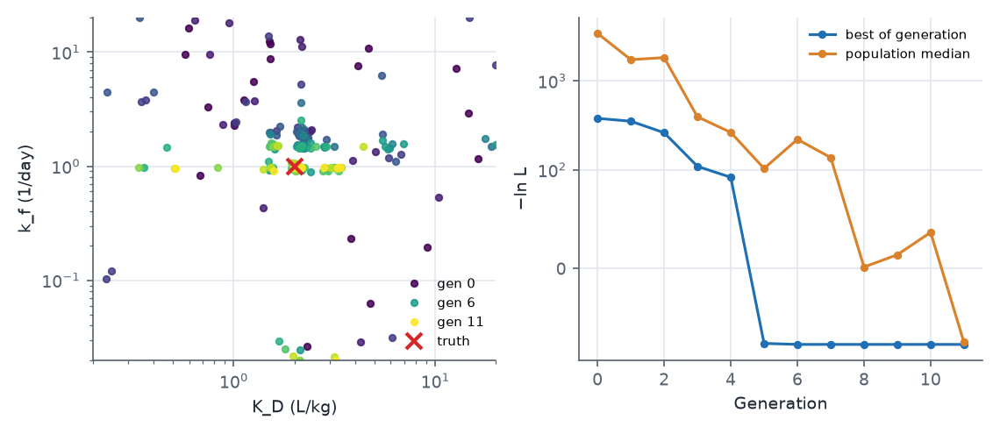
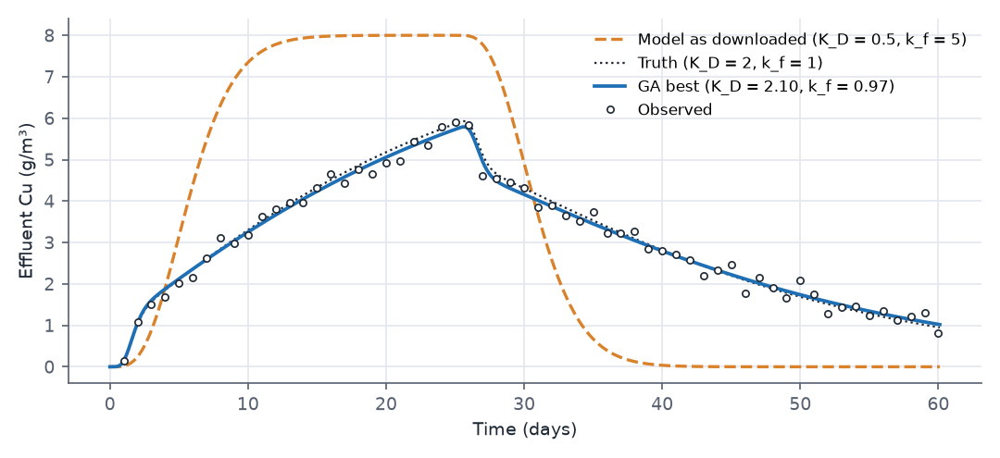
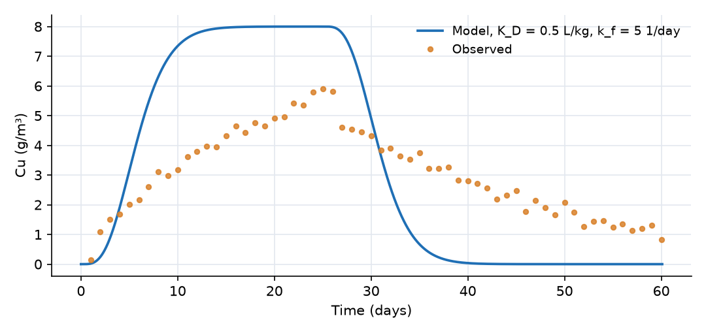

What this model represents
Column and lysimeter experiments are the standard way to measure how strongly a soil retains a contaminant. A solution of known concentration is fed through a packed column, the effluent concentration is measured over time, and the shape of the breakthrough curve is interpreted with a transport model. Here a 25-day pulse of 8 g/m³ copper passes through a 1 m column of soil. Copper sorbs to the soil with finite speed (kinetic sorption), so the breakthrough curve carries two pieces of information: how strongly copper is held (the distribution coefficient K_D) and how fast it reaches equilibrium (the rate constant k_f).
Both parameters are estimated with OpenHydroQual's genetic algorithm (GA), the method behind Inverse Run. Unlike gradient methods, the GA needs no starting guess: it samples the full range of each parameter, which is useful when the plausible range spans orders of magnitude, as it does here (K_D from 0.2 to 20 L/kg, k_f from 0.02 to 20 1/day). The data are synthetic, made with the same model at K_D = 2 L/kg and k_f = 1 1/day, so the result can be checked.
The model is adapted from a laboratory column study in the OpenHydroQual example collection. It was rebuilt at lysimeter scale (1 m² cross-section) with ten cells; see the limitations section for why.
How it works
Transport
The column is a chain of ten Groundwater cells, each 0.1 m thick, connected by Fixed flow links carrying Q = 0.2 m³/day. With 0.04 m³ of pore water per cell, the pore volume is 0.4 m³ and the water residence time is 2 days (pore velocity 0.5 m/day). Each cell is fully mixed, so the column behaves as ten tanks in series; the numerical dispersion this produces is equivalent to a dispersivity of about half a cell, 0.05 m. Dissolved copper is carried by upstream advection: the mass flux in each link is Q times the concentration in the upstream cell.
Sorption
Two reactions exchange copper between the water and the soil:
| Reaction | Rate | ν for Cu_aq | ν for Cu_s |
|---|---|---|---|
| Adsorption | k_f·Cu_aq | −1 | +n/ρ_b |
| Desorption | (k_f/K_D)·Cu_s | +1 | −n/ρ_b |
with n = 0.4 and ρ_b = 1.6 kg/L. OpenHydroQual multiplies each rate by the cell's water volume, so in each cell
dCu_aq/dt = (advection) − k_f·(Cu_aq − Cu_s/K_D) dCu_s/dt = (n/ρ_b)·k_f·(Cu_aq − Cu_s/K_D)
The factor n/ρ_b converts a change in dissolved concentration (mg/L) into a change in sorbed content per mass of soil (mg/kg), so mass is conserved. At equilibrium Cu_s = K_D·Cu_aq, and the copper front is retarded by the factor R = 1 + ρ_b·K_D/n = 1 + 4·K_D, which is 9 at the true K_D: the centre of the front needs about 18 days to cross the column. Because sorption is not instantaneous, part of the copper passes the column within the first pore volume before it can sorb, which produces the early step in the breakthrough curve. The height of that step is set mainly by k_f, the timing and length of the rise and of the elution tail mainly by K_D.
What the genetic algorithm computes
The GA minimizes the same negative log-likelihood that Levenberg-Marquardt and MCMC use. For the effluent observation, with n = 60 data points and σ = 0.2 g/m³:
−ln L = n·[ MSE/(2σ²) + ln σ ], MSE = (1/n) Σ (oᵢ − mᵢ)²
One generation works as follows (from the OpenHydroQual source, GA.hpp):
- Initial population.
maxpop= 20 parameter sets are drawn uniformly over each parameter's range, in log10 space for parameters with alog-normalprior. Each parameter is binary-coded. - Evaluation. The model is run for every individual (in parallel,
numthreads= 2) and −ln L is computed. A failed or timed-out run (maximum_time_allowed= 120 s) scores 10¹⁸. - Selection. Individuals are ranked by −ln L; each receives the selection weight 1/rank, and parents are drawn with probability proportional to that weight.
- Elitism. The best individual is copied unchanged into the first two places of the next generation.
- Crossover and mutation. Each remaining pair of parents is combined with probability
pcross= 1 by exchanging segments of their binary strings, and each bit of the offspring is flipped with probabilitypmute= 0.02. - Shake. Every individual except the first has each search-space coordinate multiplied by a random factor between 1 − s and 1 + s, with s =
shakescale= 0.05. After generation 10, s is reduced byshakescalered= 0.75 whenever the best value has not changed for three generations.
After ngen = 12 generations the last population is evaluated once more and the best individual is written as the result. The GA reports the best parameter set and the full population history; it does not report parameter uncertainty.
Running
In the interface, press Inverse Run: the best parameters are written back into the Parameter objects when it finishes. Headless:
OHQ-GA column_ga.ohq ./
Relative file names are resolved against the working folder given on the command line, so run it in the folder that contains the input files. It writes GA_output.txt (every individual of every generation with its −ln L, rank and fit measures), detail_GA.txt (start and end of every model run), and the outputs of a final run at the best parameters. The settings in the file are kept small so that the example finishes in about five minutes on two threads (260 model runs of about 2 s each). For a real calibration use a population of 40 or more and 30 to 50 generations (maxpop, ngen), as many threads as physical cores, and consider generating a compiled kernel with ohq_generate for a 10 to 15 times faster forward model.
What to look for in the results

- From scattered to concentrated. Generation 0 covers the whole range of both parameters. By generation 5 the population has collapsed onto a band at k_f ≈ 1 1/day with K_D near 2 L/kg, and the best value has dropped from 378 to −76.
- Convergence. The best individual does not improve after generation 6. The population median keeps fluctuating because mutation and crossover keep producing poor individuals; that is how the GA keeps exploring. In the last generation the median also reaches about −75.
- Mutations show the coding. Points far below the band (k_f near 0.02) and at extreme K_D in late generations are mutants: one flipped high-order bit moves a parameter across a large part of its range.

| Truth | GA best (generation 6) | LM started from the GA result | |
|---|---|---|---|
| K_D (L/kg) | 2.0 | 2.099 | 2.096 (95%: 2.033 to 2.160) |
| k_f (1/day) | 1.0 | 0.975 | 0.982 (95%: 0.942 to 1.024) |
| −ln L | −71.9 | −76.68 | −76.75 |
| model runs | 260 | 12 |
- The shape of the curve. The effluent jumps to about 1.5 g/m³ within the first 3 days (copper that passed before it could sorb), then rises slowly as the soil fills, and drops sharply when the pulse ends on day 25, followed by a long tail as sorbed copper is released. A model with equilibrium sorption would show none of the early step and a much shorter tail.
- GA and LM together. A Levenberg-Marquardt run started from the GA result (
OHQ-LMon the same file after setting the parameter values to the GA estimates) converges in 3 iterations and adds what the GA cannot give: standard errors and the correlation between the parameters (−0.07, so the two are well separated by these data). This is the workflow the two methods are designed for: the GA finds the basin, LM converges inside it and quantifies the uncertainty. - The interval for K_D just misses the truth. Both methods find a slightly better fit than the truth (−76.8 against −71.9), and the 95% interval for K_D (2.03 to 2.16) excludes the true value of 2. This happens for one data set in twenty by design; here the particular noise realization favours a slightly larger K_D. The error is 5%.
Assumptions and limitations
- Water flow is steady and saturated, imposed by the Fixed flow links; the hydraulic properties of the Groundwater cells play no part.
- Sorption is linear and first-order kinetic with a single site type. Copper sorption in real soils is often nonlinear (Freundlich or Langmuir) and may involve fast and slow sites.
- Dispersion is represented only by the numerical mixing of ten cells (about 0.05 m dispersivity). A finer discretization, or a dispersivity on the constituent, would be needed to separate dispersion from kinetic effects in real data.
- The column is 1 m² in cross-section. The source model was a laboratory column (8 cm² × 0.5 m in 20 cells), whose cells hold only 8 cm³ of water. OpenHydroQual computes concentration as mass/(Storage + 10⁻⁵ m³), and for a cell that small the 10⁻⁵ m³ term is larger than the water volume, which distorts every concentration. The physics is scale-independent, so the example uses lysimeter dimensions.
- The solver step is held at its initial value of 0.05 day (
max_timestep_increase_factor = 1). With the default growth factor the step reaches 2.5 days, and the implicit time stepping smooths the breakthrough curve by up to about 15%. - The GA run is short. Its result depends on the random initial population; with 20 individuals and 12 generations a rerun can land on a slightly different point. Larger populations and more generations make the result reproducible.
Model diagram
Hover a block or link to see its name and type. Arrows show the positive flow direction.
Components
Click a component to see every property set in the model file, with units and meaning.
Blocks 11
Storage compartments: each holds water (and dissolved or particulate mass) and has a state that evolves in time.
Cell_01Groundwater cell · groundwaterFirst of ten Groundwater cells, each 0.1 m thick with 1 m² cross-section and porosity 0.4 (0.04 m³ of pore water). It receives the column inflow of 0.2 m³/day and the copper inflow concentration from inflow_concentration.txt.
Groundwater cell: Groundwater cell
| Property | Value | Unit | Meaning |
|---|---|---|---|
| Cu_aq: Concentration | 0 | g/m3 | Computed as mass/(Storage+0.00001) |
| Cu_aq: Time Variable Inflow concentration | inflow_concentration.txt | g/m^3 | |
| Cu_s: Concentration per total volume | 0 | g/m3 | Computed as mass/(Storage+0.00001) |
| Cell area | 1.0 | m2 | |
| Bottom Elevation | -0.10 | m | Elevation of the bottom of the groundwater cell, used to determine hydraulic gradients and head. |
| Cell Depth | 0.1 | m | |
| Hydraulic Conductivity | 1 | m/day | Rate at which water can move through pore spaces or fractures in the subsurface. Influences groundwater flow velocity. |
| Inflow time series | inflow.txt | m^3/day | Time series representing external water input to the groundwater cell, such as recharge from precipitation or surface water. |
| Initial Moisture Content | 0.4 | Computed as Storage/(depth*area) | |
| Porosity | 0.4 | The fraction of the total volume of the subsurface that is occupied by voids or pores, representing storage capacity. | |
| Specific Storage | 0.01 | 1/m | Volume of water released per unit volume of aquifer per unit change in head. Reflects aquifer compressibility. |
9 × Groundwater cellGroundwater cell · groundwaterThe ten cells Cell_01 to Cell_10 that make up the 1 m column, numbered from the inlet. Each holds dissolved copper (Cu_aq) and sorbed copper (Cu_s).
Cell_02, Cell_03, Cell_04, Cell_05, Cell_06, Cell_07, Cell_08, Cell_09 …
Showing properties of Cell_02.
Groundwater cell: Groundwater cell
| Property | Value | Unit | Meaning |
|---|---|---|---|
| Cu_aq: Concentration | 0 | g/m3 | Computed as mass/(Storage+0.00001) |
| Cu_s: Concentration per total volume | 0 | g/m3 | Computed as mass/(Storage+0.00001) |
| Cell area | 1.0 | m2 | |
| Bottom Elevation | -0.20 | m | Elevation of the bottom of the groundwater cell, used to determine hydraulic gradients and head. |
| Cell Depth | 0.1 | m | |
| Hydraulic Conductivity | 1 | m/day | Rate at which water can move through pore spaces or fractures in the subsurface. Influences groundwater flow velocity. |
| Initial Moisture Content | 0.4 | Computed as Storage/(depth*area) | |
| Porosity | 0.4 | The fraction of the total volume of the subsurface that is occupied by voids or pores, representing storage capacity. | |
| Specific Storage | 0.01 | 1/m | Volume of water released per unit volume of aquifer per unit change in head. Reflects aquifer compressibility. |
Effluent_CollectorReactor · mass_transferA 1000 m³ Reactor block that receives the column effluent. It plays no part in the calibration.
Reactor: Reactor
| Property | Value | Unit | Meaning |
|---|---|---|---|
| Cu_aq: Concentration | 0 | g/m3 | Computed as mass/(Storage+0.00001) |
| Cu_s: Concentration per total volume | 0 | g/m3 | Computed as mass/(Storage+0.00001) |
| Initial Storage | 1000 | m3 | |
| Bottom elevation | -2 | m | |
| Constant Inflow | 0 | m3/day |
Links 10
Connections that move water (and the mass it carries) between blocks.
10 × Fixed flowFixed flow · mass_transferThe links Flow_01_02 to Flow_09_10 and Outlet, each carrying 0.2 m³/day downward through the column (positive from the upstream to the downstream cell). Dissolved copper moves with the water; sorbed copper does not.
Flow_01_02, Flow_02_03, Flow_03_04, Flow_04_05, Flow_05_06, Flow_06_07, Flow_07_08, Flow_08_09 …
Showing properties of Flow_01_02.
Fixed flow: Fixed flow
| Property | Value | Unit | Meaning |
|---|---|---|---|
| Flow rate | 0.2 | m3/day |
Constituents 2
Substances or particles carried by the water.
Cu_aqConstituentDissolved copper (g/m³ of pore water). Carried by the flow and exchanged with the sorbed phase.
Constituent: Chemical constituent
| Property | Value | Unit | Meaning |
|---|---|---|---|
| Concentration | 0 | g/m3 | Computed as mass/(Storage+0.00001) |
| Constant Inflow concentration | 0 | g/m3 | |
| Diffusion Coefficient | 0 | m2/s | |
| Dispersivity | 0 | m | |
| Stoichiometric Constant | 0 |
Cu_sImmobile_Constituent · mass_transferSorbed copper, an Immobile_Constituent expressed as mass sorbed per mass of soil (mg/kg) through the stoichiometric factor porosity/rho_b. It does not move between cells.
Immobile_Constituent: Immobile constituent
| Property | Value | Unit | Meaning |
|---|---|---|---|
| Concentration per total volume | 0 | g/m3 | Computed as mass/(Storage+0.00001) |
| Stoichiometric Constant | 0 |
Reaction parameters 4
Named coefficients used in reaction rate expressions.
k_fReactionParameterSorption rate constant (1/day). Calibrated through p_k_f.
ReactionParameter: Reaction Parameter
| Property | Value | Unit | Meaning |
|---|---|---|---|
| Arrhenius temperature correction factor | 1 | ||
| Value | 1.0 | ||
| Reference Temperature | 20 |
K_DReactionParameterLinear distribution coefficient (L/kg), the ratio Cu_s/Cu_aq at equilibrium. Calibrated through p_K_D.
ReactionParameter: Reaction Parameter
| Property | Value | Unit | Meaning |
|---|---|---|---|
| Arrhenius temperature correction factor | 1 | ||
| Value | 2.0 | ||
| Reference Temperature | 20 |
rho_bReactionParameterDry bulk density of the soil, 1.6 kg/L.
ReactionParameter: Reaction Parameter
| Property | Value | Unit | Meaning |
|---|---|---|---|
| Arrhenius temperature correction factor | 1 | ||
| Value | 1.6 | ||
| Reference Temperature | 20 |
porosityReactionParameterPorosity used in the stoichiometric factor, 0.4 (equal to the cells' water content).
ReactionParameter: Reaction Parameter
| Property | Value | Unit | Meaning |
|---|---|---|---|
| Arrhenius temperature correction factor | 1 | ||
| Value | 0.4 | ||
| Reference Temperature | 20 |
Reactions 2
Transformations among constituents, each with a stoichiometry and a rate expression.
AdsorptionReactionTransfer from water to soil, rate k_f·Cu_aq.
Reaction: Chemical reaction
(k_f*Cu_aq)| Constituent | Stoichiometric coefficient |
|---|---|
| Cu_aq | -1 |
| Cu_s | (porosity/rho_b) |
DesorptionReactionTransfer from soil to water, rate (k_f/K_D)·Cu_s.
Reaction: Chemical reaction
(k_f/K_D*Cu_s)| Constituent | Stoichiometric coefficient |
|---|---|
| Cu_aq | 1 |
| Cu_s | (0-porosity/rho_b) |
Model parameters 2
Quantities flagged for estimation, with their search ranges or priors.
p_K_DParameterCalibrated distribution coefficient (L/kg). Range 0.2 to 20, searched in log10. Truth 2 (retardation factor 9).
Parameter: Parameter
| Property | Value | Unit | Meaning |
|---|---|---|---|
| Lower Limit | 0.2 | ||
| Upper Limit | 20 | ||
| Value | 0.5 | ||
| Prior distribution | log-normal |
p_k_fParameterCalibrated sorption rate constant (1/day). Range 0.02 to 20, searched in log10. Truth 1.
Parameter: Parameter
| Property | Value | Unit | Meaning |
|---|---|---|---|
| Lower Limit | 0.02 | ||
| Upper Limit | 20 | ||
| Value | 5 | ||
| Prior distribution | log-normal |
Observations 1
Model outputs that are recorded and, when data are supplied, compared with measurements.
Effluent_CuObservationObservation of Cu_aq in Cell_10 (the column outlet), compared with observed_effluent.csv under a normal error model with a fixed SD of 0.2 g/m³.
Observation: Observation
| Property | Value | Unit | Meaning |
|---|---|---|---|
| Expression | Cu_aq:concentration | Expression evaluated on the chosen object at each output time step. Typically a single state variable (e.g. 'Storage') or a derived quantity (e.g. 'Storage/Area'). The result becomes the modeled value compared against observed data. | |
| Error probability distribution | normal | Distribution assumed for the residual between modeled and observed values. 'normal' compares values directly; 'log-normal' compares the logs (suitable for strictly positive quantities spanning multiple orders of magnitude, e.g. concentrations or flows). | |
| Error standard deviation | 0.2 | Standard deviation of the residual under the chosen error structure. For 'normal' errors, units match the observed quantity; for 'log-normal' errors, this is the standard deviation of log-residuals. May be set per-observation or pushed in at runtime from a Truth Twin metadata sidecar. | |
| Comparison Method | Least Squared | How modeled and observed series are compared. 'Least Squared' uses standard sum of squared residuals (negative log-likelihood for normal/log-normal errors). 'Similarity' compares autocorrelation structure and value distribution (Kolmogorov-Smirnov), useful when point-by-point matching is not meaningful. 'Weighted Least Squared' applies a temporal kernel that downweights older observations, suited for streaming data assimilation where recent measurements should dominate. 'EMC' compares event mean concentrations: for each event window in the EMC events file the modeled expression is weighted by the EMC weighting expression (e.g. flow) and averaged over the event, then compared with the observed value time-stamped within that window. | |
| Observed data time series | observed_effluent.csv | Measured time series to compare the modeled output against. Used by all comparison methods. May be loaded from a file or pushed in at runtime by an external assimilation driver. |
Input files
inflow_concentration.txt | Copper concentration of the inflow (g/m³) versus time (days). 8 g/m³ from day 0 to day 25, then clean water. |
inflow.txt | Water inflow to the top of the column (m³/day) versus time (days), constant 0.2 m³/day (a Darcy flux of 0.2 m/day over 1 m²). |
observed_effluent.csv | Synthetic effluent copper concentrations (g/m³), one per day from day 1 to day 60. Made by running the model at K_D = 2 L/kg and k_f = 1 1/day and adding Gaussian noise with SD 0.2 g/m³ (random seed 7). Two columns, no header. |
Simulation settings
| Start time | 0 |
| End time | 60 |
| Initial time step | 0.05 |
| Write interval (steps) | 100 |
| Newton-Raphson tolerance | 1e-06 |
Results
Produced by running the downloaded model unchanged.
